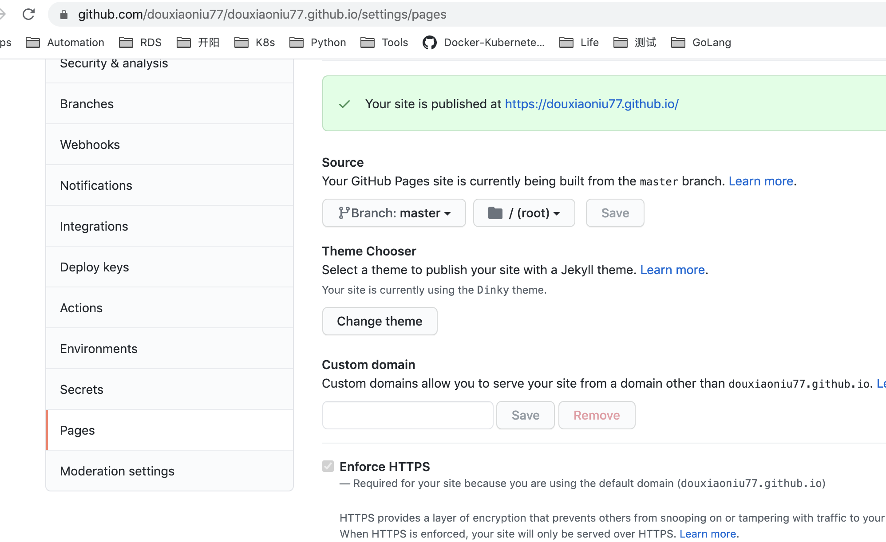

github + hexo
Edit# github + hexo
大概流程：
搭建 Node.js 环境
搭建 Git 环境
GitHub 注册和配置
安装配置 Hexo
关联 Hexo 与 GitHub Pages
具体操作：
搭建 Node.js 环境
mac下记得使用nvm 或者brew install安装hexo， 需要设置：npm config set registry http://registry.npm.taobao.org
root@xueniu scripts# npm install hexo-cli -g
⸨░░░░░░░░░░░░░░░░░░⸩ ⠧ rollbackFailedOptional: verb npm-session 9ec95b4bf520f9cf
⸨░░░░░░░░░░░░░░░░░░⸩ ⠧ rollbackFailedOptional: verb npm-session 9ec95b4bf520f9cf
and root@xueniu scripts#
root@xueniu scripts# npm config set registry http://registry.npm.taobao.org
root@xueniu scripts# npm install hexo-cli -g
/usr/local/bin/hexo -> /usr/local/lib/node_modules/hexo-cli/bin/hexo
root@xueniu scripts# cd douxiaoniu77.github.io/
root@xueniu douxiaoniu77.github.io# ls
.gitignore _config.yml package-lock.json scaffolds themes
_config.landscape.yml node_modules package.json source
root@xueniu douxiaoniu77.github.io# npm install
added 6 packages from 6 contributors in 1.08s
15 packages are looking for funding
run npm fund for details
root@xueniu douxiaoniu77.github.io#
发布github后空白，可能权限问题
重新安装
For Mac / Linux 用户
如果在尝试安装 Hexo 的过程中出现 EACCES 权限错误，请遵循 由 npmjs 发布的指导 修复该问题。强烈建议 不要 使用 root、sudo 等方法覆盖权限
- 安装nvm - nodejs
enter xueniu@xueniu Software$ curl -o- https://raw.githubusercontent.com/nvm-sh/nvm/v0.34.0/install.sh | bash
% Total % Received % Xferd Average Speed Time Time Time Current
Dload Upload Total Spent Left Speed
100 13226 100 13226 0 0 6707 0 0:00:01 0:00:01 –:–:– 6706
=> nvm is already installed in /Users/xueniu/.nvm, trying to update using git
=> => Compressing and cleaning up git repository
……..
确认安装
xueniu@xueniu Software
安装nodeJs
xueniu@xueniu Software$ nvm install node
Downloading and installing node v16.0.0…
Downloading https://nodejs.org/dist/v16.0.0/node-v16.0.0-darwin-x64.tar.gz…
######################################################################## 100.0%
Computing checksum with shasum -a 256
Checksums matched!
Now using node v16.0.0 (npm v7.10.0)
Creating default alias: default -> node (-> v16.0.0)
xueniu@xueniu Software$
安装hexo
xueniu@xueniu Software$ npm install -g hexo-cli
added 66 packages, and audited 67 packages in 9s
初始化
xueniu@xueniu Software$ hexo init blog
INFO Cloning hexo-starter https://github.com/hexojs/hexo-starter.git
INFO Install dependencies
INFO Start blogging with Hexo!
xueniu@xueniu Software$
xueniu@xueniu Software
npm install
启动hexo server，指定端口
1 | xueniu@xueniu blog$ hexo server -p 4001 |
关联github
配置 _config.yml中`、
执行 hexo clean
hexo g
hexo d
github Settings中记得source 选择为master

访问github 地址，出现404错误，原因 _config.yml 中设置有问题，repo设置问题
1 | deploy: |
%23%20github%20+%20hexo%20%20%0A%0A%0A———-%0A%0A%0A%23%23%20%u5927%u6982%u6D41%u7A0B%uFF1A%0A%0A1.%20%u642D%u5EFA%20Node.js%20%u73AF%u5883%0A%0A2.%20%u642D%u5EFA%20Git%20%u73AF%u5883%0A%0A3.%20GitHub%20%u6CE8%u518C%u548C%u914D%u7F6E%0A%0A4.%20%u5B89%u88C5%u914D%u7F6E%20Hexo%0A%0A5.%20%u5173%u8054%20Hexo%20%u4E0E%20GitHub%20Pages%0A%0A%23%23%20%u5177%u4F53%u64CD%u4F5C%uFF1A%0A%0A1.%20%20%u642D%u5EFA%20Node.js%20%u73AF%u5883%0A%0Amac%u4E0B%u8BB0%u5F97%u4F7F%u7528nvm%20%u6216%u8005brew%20install%0A%0A2.%20%20%u5B89%u88C5hexo%uFF0C%20%u9700%u8981%u8BBE%u7F6E%uFF1Anpm%20config%20set%20registry%20http%3A//registry.npm.taobao.org%0A%0A%3E%20root@xueniu%20scripts%23%20npm%20install%20hexo-cli%20-g%0A%3E%20%u2E28%u2591%u2591%u2591%u2591%u2591%u2591%u2591%u2591%u2591%u2591%u2591%u2591%u2591%u2591%u2591%u2591%u2591%u2591%u2E29%20%u2827%20rollbackFailedOptional%3A%20verb%20npm-session%209ec95b4bf520f9cf%0A%3E%20%u2E28%u2591%u2591%u2591%u2591%u2591%u2591%u2591%u2591%u2591%u2591%u2591%u2591%u2591%u2591%u2591%u2591%u2591%u2591%u2E29%20%u2827%20rollbackFailedOptional%3A%20verb%20npm-session%209ec95b4bf520f9cf%0A%3E%20and%20root@xueniu%20scripts%23%20%0A%3E%20root@xueniu%20scripts%23%20npm%20config%20set%20registry%20http%3A//registry.npm.taobao.org%0A%3E%20root@xueniu%20scripts%23%20npm%20install%20hexo-cli%20-g%0A%3E%20/usr/local/bin/hexo%20-%3E%20/usr/local/lib/node_modules/hexo-cli/bin/hexo%0A%0A%0Aroot@xueniu%20scripts%23%20cd%20douxiaoniu77.github.io/%0Aroot@xueniu%20douxiaoniu77.github.io%23%20ls%0A.gitignore%09%09_config.yml%09%09package-lock.json%09scaffolds%09%09themes%0A_config.landscape.yml%09node_modules%09%09package.json%09%09source%0Aroot@xueniu%20douxiaoniu77.github.io%23%20npm%20install%0Aadded%206%20packages%20from%206%20contributors%20in%201.08s%0A%0A15%20packages%20are%20looking%20for%20funding%0A%20%20run%20%60npm%20fund%60%20for%20details%0A%0Aroot@xueniu%20douxiaoniu77.github.io%23%20%0A%0A%0A%0A%u53D1%u5E03github%u540E%u7A7A%u767D%uFF0C%u53EF%u80FD%u6743%u9650%u95EE%u9898%0A%0A%0A%u91CD%u65B0%u5B89%u88C5%0A%0AFor%20Mac%20/%20Linux%20%u7528%u6237%0A%u5982%u679C%u5728%u5C1D%u8BD5%u5B89%u88C5%20Hexo%20%u7684%u8FC7%u7A0B%u4E2D%u51FA%u73B0%20EACCES%20%u6743%u9650%u9519%u8BEF%uFF0C%u8BF7%u9075%u5FAA%20%u7531%20npmjs%20%u53D1%u5E03%u7684%u6307%u5BFC%20%u4FEE%u590D%u8BE5%u95EE%u9898%u3002%u5F3A%u70C8%u5EFA%u8BAE%20%u4E0D%u8981%20%u4F7F%u7528%20root%u3001sudo%20%u7B49%u65B9%u6CD5%u8986%u76D6%u6743%u9650%0A1.%20%u5B89%u88C5nvm%20-%20nodejs%0A%0A%3E%20enter%20xueniu@xueniu%20Software%24%20%20curl%20-o-%20https%3A//raw.githubusercontent.com/nvm-sh/nvm/v0.34.0/install.sh%20%7C%20bash%0A%3E%20%20%25%20Total%20%20%20%20%25%20Received%20%25%20Xferd%20%20Average%20Speed%20%20%20Time%20%20%20%20Time%20%20%20%20%20Time%20%20Current%0A%3E%20%20Dload%20%20Upload%20%20%20Total%20%20%20Spent%20%20%20%20Left%20%20Speed%0A%3E%20%20100%2013226%20%20100%2013226%20%20%20%200%20%20%20%20%200%20%20%206707%20%20%20%20%20%200%20%200%3A00%3A01%20%200%3A00%3A01%20–%3A–%3A–%20%206706%0A%3E%20%20%3D%3E%20nvm%20is%20already%20installed%20in%20/Users/xueniu/.nvm%2C%20trying%20to%20update%20using%20git%0A%3E%20%20%3D%3E%20%3D%3E%20Compressing%20and%20cleaning%20up%20git%20repository%0A%3E%20%20……..%0A%0A%u786E%u8BA4%u5B89%u88C5%0A%3E%20%20xueniu@xueniu%20Software%24%20command%20-v%20nvm%0A%3E%20%20nvm%0A%3E%20%20xueniu@xueniu%20Software%24%20%0A%0A%u5B89%u88C5nodeJs%0A%3E%20%20xueniu@xueniu%20Software%24%20nvm%20install%20node%20%0A%3E%20%20Downloading%20and%20installing%20node%20v16.0.0…%0A%3E%20%20Downloading%20https%3A//nodejs.org/dist/v16.0.0/node-v16.0.0-darwin-x64.tar.gz…%0A%3E%20%20%23%23%23%23%23%23%23%23%23%23%23%23%23%23%23%23%23%23%23%23%23%23%23%23%23%23%23%23%23%23%23%23%23%23%23%23%23%23%23%23%23%23%23%23%23%23%23%23%23%23%23%23%23%23%23%23%23%23%23%23%23%23%23%23%23%23%23%23%23%23%23%23%20100.0%25%0A%3E%20%20Computing%20checksum%20with%20shasum%20-a%20256%0A%3E%20%20Checksums%20matched%21%0A%3E%20%20Now%20using%20node%20v16.0.0%20%28npm%20v7.10.0%29%0A%3E%20%20Creating%20default%20alias%3A%20default%20-%3E%20node%20%28-%3E%20v16.0.0%29%0A%3E%20%20xueniu@xueniu%20Software%24%20%0A%0A%u5B89%u88C5hexo%0A%3E%20%20xueniu@xueniu%20Software%24%20npm%20install%20-g%20hexo-cli%0A%3E%20%20added%2066%20packages%2C%20and%20audited%2067%20packages%20in%209s%0A%0A%u521D%u59CB%u5316%0A%3E%20%20xueniu@xueniu%20Software%24%20hexo%20init%20blog%0A%3E%20%20INFO%20%20Cloning%20hexo-starter%20https%3A//github.com/hexojs/hexo-starter.git%0A%3E%20%20INFO%20%20Install%20dependencies%0A%3E%20%20INFO%20%20Start%20blogging%20with%20Hexo%21%0A%3E%20%20xueniu@xueniu%20Software%24%20%0A%0A%3E%20%20xueniu@xueniu%20Software%24%20cd%20blog%0A%3E%20%20xueniu@xueniu%20blog%24%20npm%20install%0A%0A%u542F%u52A8hexo%20server%uFF0C%u6307%u5B9A%u7AEF%u53E3%0A%0A%20%20%20%20xueniu@xueniu%20blog%24%20hexo%20server%20%20-p%204001%0A%20%20%20%20INFO%20%20Validating%20config%0A%20%20%20%20INFO%20%20Start%20processing%60%0A%20%20%20%20Deprecated%20as%20of%2010.7.0.%20highlight%28lang%2C%20code%2C%20…args%29%20has%20been%20deprecated.%0A%20%20%20%20Deprecated%20as%20of%2010.7.0.%20Please%20use%20highlight%28code%2C%20options%29%20instead.%0A%20%20%20%20https%3A//github.com/highlightjs/highlight.js/issues/2277%0A%20%20%20%20INFO%20%20Hexo%20is%20running%20at%20http%3A//localhost%3A4001%20.%20Press%20Ctrl+C%20to%20stop.strong%20text%0A%0A%u5173%u8054github%0A%3E%20%20%u914D%u7F6E%20_config.yml%u4E2D%60%u3001%0A%3E%20%20%u6267%u884C%20hexo%20clean%0A%3E%20%20hexo%20g%0A%3E%20%20hexo%20d%0A%3E%20%0A%20%0A%0Agithub%20Settings%u4E2D%u8BB0%u5F97source%20%u9009%u62E9%u4E3Amaster%20%0A%21%5BAlt%20text%5D%28./1619078561709.png%29%0A%0A%u8BBF%u95EEgithub%20%u5730%u5740%uFF0C%u51FA%u73B0404%u9519%u8BEF%uFF0C%u539F%u56E0%20_config.yml%20%u4E2D%u8BBE%u7F6E%u6709%u95EE%u9898%uFF0Crepo%u8BBE%u7F6E%u95EE%u9898%0A%0A%20%20%20%20deploy%3A%0A%20%20%20%20%20%20type%3A%20git%0A%20%20%20%20%20%20repo%3A%20https%3A//github.com/douxiaoniu77/douxiaoniu77.github.io.git%0A%20%20%20%20%20%20branch%3A%20master%0A%0A%0A%0A%0A